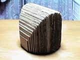

Volume of a Solid
Problem
There is a solid whoese bottom face is the circle .
And every cross-section of the solid perpendicular to x-axis is a square.
Find the volume of the solid.
Applet
A Cross-Section
To move the cross-section, click "+" and "-" button.
Cross-Sections
To change the number of cross-sections, click "+" and "-" button.
Approximation
It shows the idea of calculating the volume. To change the number of slices, click "+" and "-" button.
Cardboard Model
